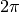
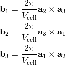

cmspy.xtal.lattice package¶
Submodules¶
cmspy.xtal.lattice.utils module¶
-
cmspy.xtal.lattice.utils.dlv2rlv(dlv)¶ Convert direct lattice vectors to reciprocal lattice vectors.
This function uses the convention used in solid state physics, specifically, the reciprocal lattice vectors come with the factor of .

-
cmspy.xtal.lattice.utils.metric_tensor(lattice_vectors)¶ The metric tensor
-
cmspy.xtal.lattice.utils.rlv2dlv(rlv)¶ Convert reciprocal lattice vectors to direct lattice vectors.
This function uses the convention used in solid state physics, specifically, the reciprocal lattice vectors come with the factor of